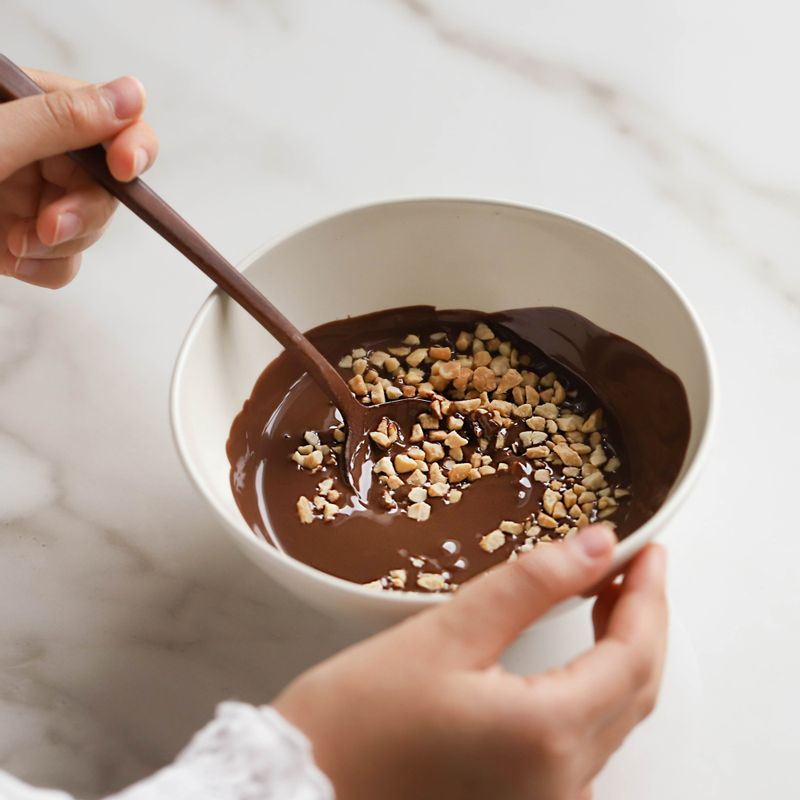
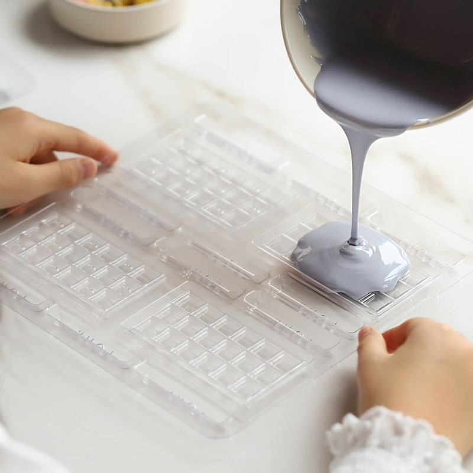
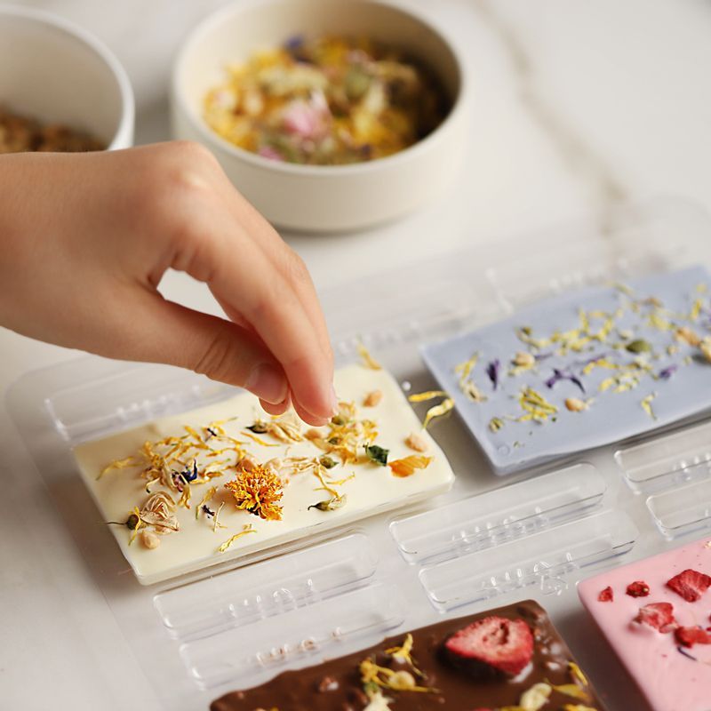
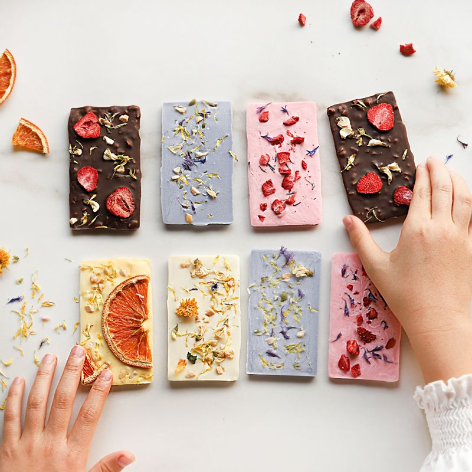

-

60도 이하의 따뜻한 물이 담긴 트레이에 초콜릿이 담긴 볼을 올려 중탕으로 녹여주세요.
(초콜릿에 물이 들어가지 않도록 주의해서 저어주세요.)
-

틀에 녹인 초콜릿을 부어주세요.
(틀이 없으면 평평한 쟁반에 유산지를 깔고 녹인 초콜릿과 토핑을 올려 굳힌 후 먹기 좋은 크기로 잘라 만들어 주세요.)
-

바크초콜릿이 굳기 전에 과일 건조칩, 견과류, 말린 꽃잎을 올려 장식해 주세요.
-

서늘한 곳에서 3~4시간 정도 굳힌 후 초콜릿을 틀에서 꺼내주세요. 예쁘게 포장해 선물로 활용해보세요.
(냉장고에 넣어 굳힐 경우 30분 정도 굳혀주세요.)